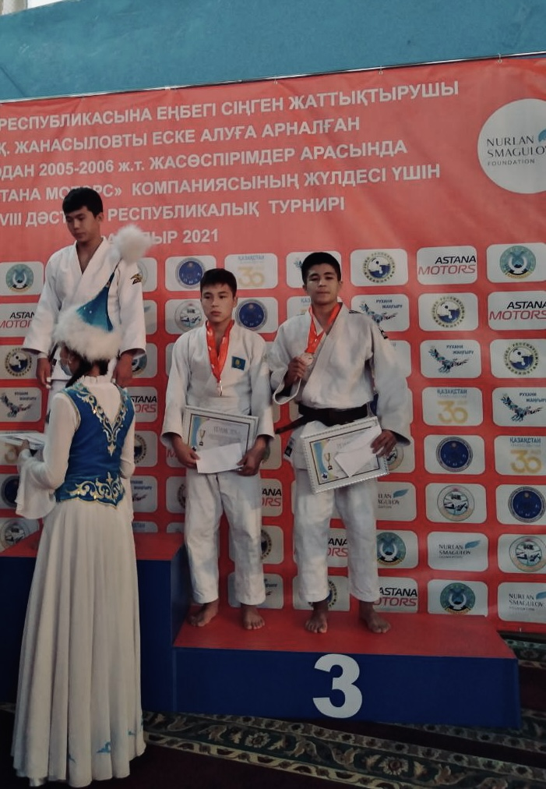

My Hobbies
Judo

Before university, I practiced judo for 5 years and earned the title of Candidate for Master of Sports (CMS). Unfortunately, due to an injury, I had to stop training actively. However, sports remain an important part of my life. Now, I occasionally run in the mornings and do light training to maintain my shape, and I sometimes go to the gym to wrestle.
Watching Sports
Another passion of mine is watching sports. I’m a fan of football, wrestling, and UFC, and I never miss major international tournaments. The thrill of competition and the excitement of watching my favorite athletes in action keeps me engaged.
Coding
Recently, I discovered a new hobby—coding! I want coding to become my new hobby. It’s a new challenge that I’m eager to explore further.